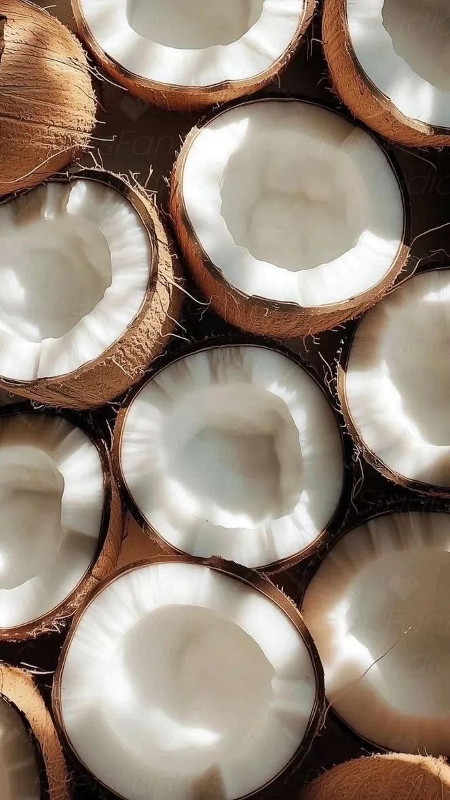

Jabón vegetal
Coco y aloe vera
Limpieza suave que deja la piel hidratada, suave y fresca. El coco representa el paisaje tropical y las costas de Costa Rica.
- Aceite de coco
- Extracto de coco
- Aloe vera
- Glicerina vegetal
- Aceites vegetales